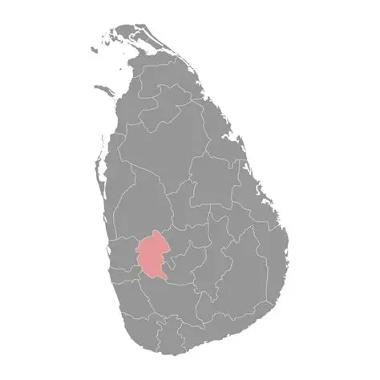
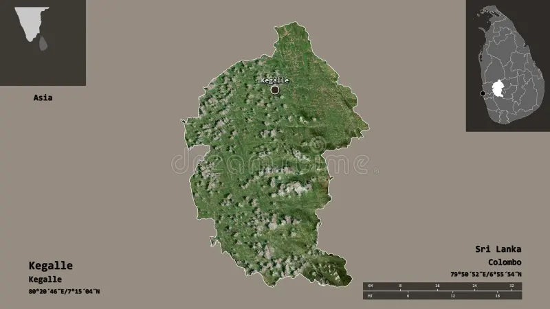

LOCATION- Sabaragamuwa province
- Kegalle district
- Kegalle district
ELEVATION- 32 m above sea level
CLIMATE- Temperature 22 - 30 celsius
- Annual rainfall 3500-4000 mm
- Annual rainfall 3500-4000 mm
AREA- 142.3 km²
MAIN ACCESS- Kandy - Avissawella
ECONOMY- Trading, services & agriculture

SRI LANKA

KEGALLE DISTRICT
Ruwanwella Base Map
Ruwanwella is a charming Sri Lankan town where natural beauty meets cultural heritage.
From its lush greenery and river landscapes to its growing urban character, the town
represents a balance between preserving tradition and supporting sustainable development.